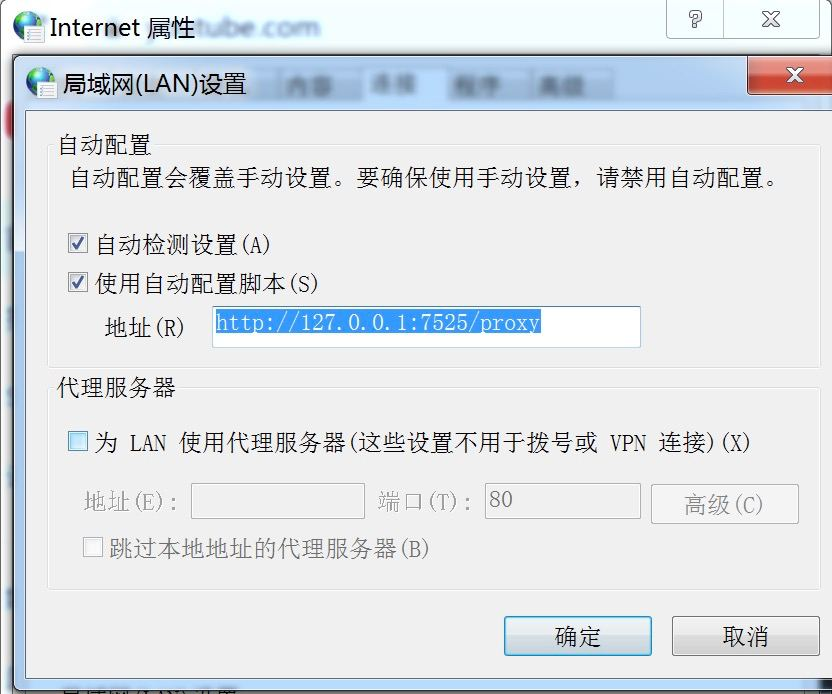

Naraka 到底值不值得掏钱？一笔算得清的加速账本
从协议穿透到设备配额，从轻度日常到重度游戏，三类用户的 Naraka 付费决策拆解——免费版够用吗？钱花在哪最值？
开头：这钱到底值不值？
我用 Naraka 断断续续大半年了。说实话，第一次打开的时候我也在想——不就是个网络加速工具吗，凭什么让我掏钱？
今天就把这笔账掰扯清楚。我不是来劝你买的，是帮你算：你到底属于哪种人，免费版够不够，付费版的每一块钱花得在不在点子上。
先把牌摊开：Naraka官网宣传的核心价值其实就三件事——协议穿透（尤其是 UDP）、加密通道（AES-256）、节点覆盖。所有付费差异基本都围绕这三点展开。
定价拆解：免费版给什么，付费版多什么
样本文档里没列详细的价格表，但从功能边界倒推，我整理出了自己用下来的实际感受：
（安装包从Naraka下载拿，Windows、macOS、Android、iOS 都覆盖）免费版的底线能力：
- 基础的加密通道能用，AES-256 加密不缩水
- 分流和全局两种路由模式都能切
- 协议选择支持 TCP、UDP、自动三档——具体的协议差异和切换技巧在Naraka文档里写得很细
- 设备数有限额（我印象里是 3~4 台），但够个人用
- 节点覆盖有得选，但高峰期会碰到拥堵排队

付费版的增量价值（也是它敢收钱的地方）：
- 优先节点访问——不用排队，高峰期也能秒连
- 设备数放宽到 8~10 台（对多设备用户是硬需求）
- 更多地区节点——跨境场景特别关键，比如同时要访问国内内网和海外协作平台
- 带宽优先级——视频会议、游戏这种实时应用延迟明显更低
- 客服响应——免费版靠论坛和文档，付费版有工单通道，分流模式加规则这种事不用等
说句公道话：Naraka 的定价逻辑挺鸡贼的——它把基础安全（AES-256 加密）放在免费版里，让你先尝到"加密传输"的甜头，然后把速度体验和便利性锁进付费墙。这策略不新鲜，但挺有效。
算账：三类用户分别怎么选
第一类：轻度用（每天 <1 小时）
典型场景： 偶尔刷刷海外网页、看看 YouTube 视频、一周开一两次远程会议。
免费版够不够？够。
我算一笔时间账：轻度使用时，高峰期节点拥堵你顶多等个 10 秒钟——这段时间喝口水的工夫，对你本来就不密集的使用节奏几乎没影响。设备数 3~4 台也够（手机 + 笔记本 + 平板顶天了）。
唯一可能让你觉得差点意思的是视频会议偶尔的卡顿。但说实话，Zoom 卡不卡不全是加速器的锅，本地带宽和对方网络也占一半。
结论：继续白嫖。钱花在这性价比极低。
第二类：主力用（每天 2~4 小时）
典型场景： 远程办公刚需、每天固定两三个小时游戏、海外协作是常态。
这是付费版的甜蜜区。
主力用的人有个共同特征：加速器不是锦上添花，是生产工具。
我帮你算一下时间成本：假设你每天用 Naraka 3 小时，高峰期平均每天遇到 2 次节点拥堵，每次浪费 3 分钟——一周下来浪费 42 分钟。加上视频会议卡顿重连、游戏掉线重开，粗算一周亏一个小时。
付费版假设每月 30 块钱，那就是 1 小时 = 7.5 元。你自己拍板：你的时间值不值这个价？
设备配额这里还有个隐性成本——主力用的人往往设备也多（公司电脑 + 个人电脑 + 手机 + 备用机），免费版 3~4 台容易撞上。撞上限额那天，你要么解绑旧设备（得找台能登录的设备操作，还可能把正在用的那台踢下线），要么就得升级。这个解绑操作本身就要花 10~15 分钟的烦躁时间。

结论：闭眼付。这个档位是付费版最物有所值的区间。
第三类：重度用（每天 >6 小时）
典型场景： 工作室跨洋协作、职业/半职业游戏玩家、需要 7×24 小时保持加密通道。
付费版也可能不够——你需要更专业的方案。
重度用的人，Naraka 付费版的带宽优先级和节点稳定性确实比免费版好，但你迟早会碰到一个天花板：单账号的节点配额终究是有限的。高峰期即便是付费节点，用的人多了也会慢。
游戏玩家特别要注意：UDP 协议优化是 Naraka 的核心卖点，但如果你的游戏对延迟特别敏感（比如射击游戏），付费版能给你带来的改善可能就是 10~30ms。这个数字在"能玩"和"玩得爽"之间，但到了职业级对局，可能还不够。
另外，多设备重度用户可能会发现——8~10 台设备说起来不少，但工作室里一人两台的话，两三个人就用光了。这时候要么多买账号，要么考虑企业方案。
结论：按需付费，但别指望付费版解决所有问题。真到职业级，得自己搭专线。
替代方案：不付这笔钱有什么别的路
说了这么多 Naraka 的好，也得给不想掏钱的朋友留后路：
用同类免费工具： WireGuard 是开源的，自己搭节点理论上一分钱不用花——但搭建和维护成本很高，你得懂网络配置、得自己找服务器、得自己运维。适合技术宅，不适合普通人。
降低使用频率： 把需要加速的事情集中在"不是高峰期"的时间段做。比如海外视频缓存到晚上下载，远程会议约在白天（节点压力小）。代价就是得改变你的作息和工作节奏。
用公司/学校的资源： 有些公司已经有企业级的加速方案了，问问 IT 部门能不能复用；大学也经常有免费的学术网络出口。这是性价比最高的"免费午餐"，但不是每个人都能碰上。
多个免费账号轮换： Naraka 的设备配额和签到积分是绑定的，多搞几个邮箱注册能扩容——但这违反它的服务条款，风险自担，我不推荐。
最后：哪类人付，哪类人再等等，哪类人永远不用付
拍板时刻到了。对照自己的使用情况对号入座：
闭眼付的人： 每天 2~4 小时主力使用、远程办公刚需、有明确的游戏/协作需求——你已经在花钱买"省心"了，不如大方点把加速也配上。这钱花了之后你会发现：之前浪费在等节点、换协议、解设备上的时间，真的比那几十块值钱。
再等等的人： 轻度使用但偶尔有高峰需求——先把免费版用满，真碰到一次让你骂娘的卡顿再考虑升级。加速器的付费价值不是线性增长的，得让痛点逼你掏钱，别提前消费。
永远不用付的人： 每周用不到一次、只看国内内容、或者已经有公司配的专业方案——恭喜，你不在 Naraka 的目标用户画像里，省下的钱加杯咖啡不香吗？
我自己属于第二类主力用——远程办公 + 每天一两小时游戏，付的钱值。但这是我的账本，你的得你自己算。
这套 Naraka 的资料和使用经验，我整理后分别放在三个仓库里了：GitHub 那边是完整的文档归档，Gitee 适合国内访问的朋友，GitCode 做了一份备份。三处内容同步更新，哪端用着顺手就去哪端看。